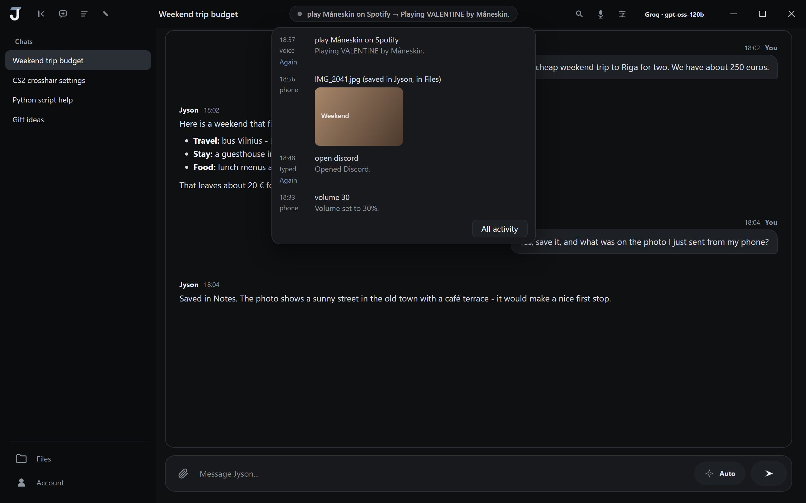
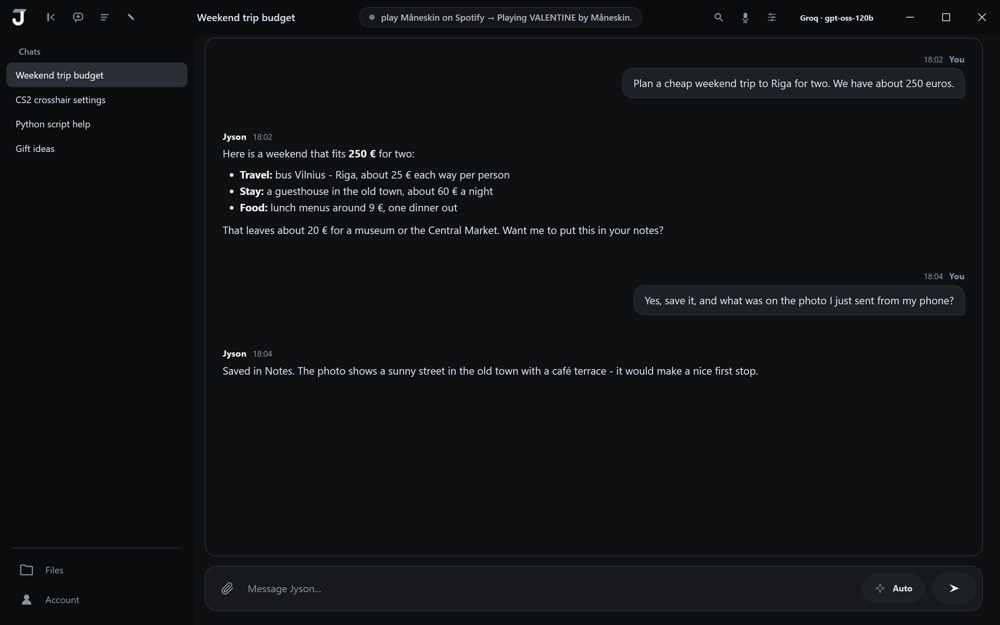

Voice and chat
Say the wake word and give a command, or open the window for a longer conversation. Past chats and long-term memory are kept apart, and you can clear either.
AI assistant for Windows
Open apps, play music, save a note, find the photo you sent from your phone. Jyson does the task, tells you what it did, and gets out of the way.

Real app window, filled with example data.
Chats stay chats. Quick commands like "open Discord" go to the activity list instead, so your chat history doesn't fill up with one-liners.

Say the wake word and give a command, or open the window for a longer conversation. Past chats and long-term memory are kept apart, and you can clear either.
Opens and closes apps, changes volume, sets timers, controls Spotify, and works with your windows and files. Risky actions ask first.
A small bar at the top of the screen shows only what matters right now: listening, music, a timer, the result of a command. It works on every monitor you have.
An optional Jyson taskbar with app previews, Start and search, in the same colours as the app. Switch back to the Windows one any time.
Use a cloud provider with your own key, or run a model on your own PC. Local models download only if you choose them.
An Android app that sends files and commands to your PC. It is in private testing and not available to download yet.
Only signed-in Jyson accounts can post a review. We don't check whether the reviewer installed the app. The newest reviews are shown first, and low ratings are not hidden. See something wrong? Report a review.
Loading reviews…
No account needed. Uninstall from Windows Settings like any other app.